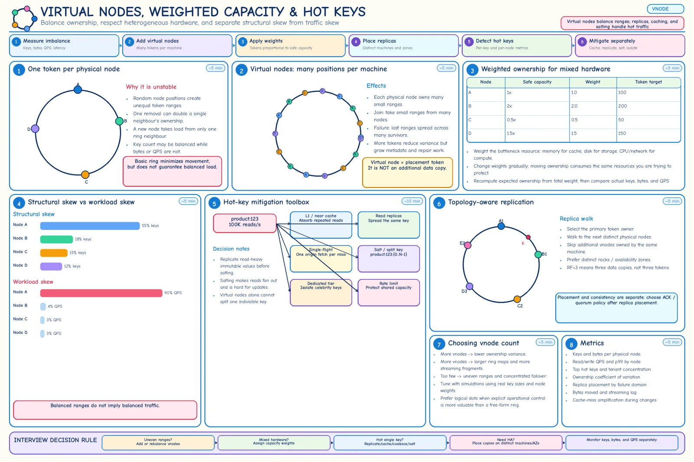

Topic · Consistent Hashing in Depth
Virtual Nodes, Weights, and Hot Keys
Vnodes and weights fix structural imbalance. Replication, caching, salting, and admission control fix traffic imbalance.


Quick Revision
- A vnode is a token position, not a replica.
- Vnodes: lower variance, joins take from many nodes, failures spread across survivors.
- Costs: bigger metadata, more streaming/repair fragments, bigger bad-publish blast radius.
- Weight tokens by the real bottleneck (memory, IOPS, CPU, network).
- One hot key → still one owner. Copies needed =
ceil(hot QPS ÷ per-node QPS).
Virtual nodes
- One token per node - uneven ranges; a failed node's whole range lands on one neighbour.
- Many tokens per node - machine A owns
A-0 .. A-127interleaved with others. - How many? - no universal number; simulate real key sizes and weights, choose the smallest count meeting variance and failover-spread targets.
metadata = nodes × vnodes × bytes per token 50 × 256 = 12,800 tokens × 128 B ≈ 1.64 MB (small map, but many streaming/repair units) ownership_cv = stddev(bytes per node) / mean(bytes per node)
Weighted ownership
expected_ownership_i = keyspace × weight_i / sum(weights) Node capacity weight tokens (base 100) A 1× 1.0 100 B 2× 2.0 200 C 0.5× 0.5 50 D 1.5× 1.5 150
Reweighting is a migration - change weights gradually with movement budgets and smoothed signals.
Structural vs workload skew
- Structural - too few vnodes, poor token placement, uneven value sizes, wrong weights, uneven replicas → more/better tokens, weights, slot reassignment, range splits.
- Workload -
product:123at 100K reads/s while others get 10/s - the ring is right, the owner still melts. - Hot-key fixes - L1/near cache, read replicas, single-flight, warming + longer TTL for immutable data, salting/subpartitioning, dedicated hot tier, admission control, precomputation.
copies needed = ceil(hot_key_qps / safe_qps_per_node) 100K / 20K = 5 healthy copies -- adding vnodes doesn't divide one key
Trade-offs
| Choice | Benefit | Cost / risk |
|---|---|---|
| One token per node | Minimal metadata | Unequal ranges, concentrated failover |
| Many virtual nodes | Balance and spread | Metadata, streaming fragments, repair |
| Equal token count | Simple homogeneous cluster | Wastes strong or overloads weak nodes |
| Weighted ownership | Uses heterogeneous capacity | Reweighting moves data; wrong weights |
| Hot-key read replication | High read throughput | Invalidation, extra storage |
| Key salting | Splits one hot key | Fan-out reads, aggregation |
| Longer TTL / near cache | Less hot-key load | More staleness |
| Strict owner affinity | High locality | Hot owners overload |
| Bounded-load placement | Caps overload | More movement, weaker affinity |
Failure modes
- Unequal ring ownership - vnodes, balanced tokens, or fixed slots.
- Keys balanced, bytes not - weight and rebalance by bytes.
- Bytes balanced, QPS not - replicas, near cache, single-flight, salting, isolation, rate limits.
- Hot key survives vnode expansion - replicate/split/cache it explicitly.
- Weak machine overloaded / strong one idle - weights calibrated from real bottleneck metrics.
- Failed node's load crushes one successor - vnodes, replicas, failover headroom.
- Large tenant can't fit one owner - sub-shard with a compound key.
- Weight updates oscillate - smoothed signals, hysteresis, bounded steps.
- Vnode count copied blindly - simulate with your workload.
Interview practice
Answer aloud, then reveal.
Why use virtual nodes? Downside of too many?
Lower ownership variance, spread failover, small ranges taken from many nodes on join. Too many: bigger maps, more streaming/repair fragments, harder placement.
What if a new token lands in a huge interval?
With one token per node it moves far more than average; vnodes or balanced tokens reduce variance.
How do you support heterogeneous nodes?
Weighted ownership from safe capacity; change weights gradually.
Does consistent hashing guarantee even distribution?
No - only probabilistic. Value sizes, hashes, weights, tenants, and popularity still skew it.
Does consistent hashing solve hot keys?
No. Replicate/cache, coalesce, salt/split, isolate, or rate-limit.
Atlassian Senior (Aug 2024): concerns with consistent hashing for a music upload/streaming service?
It places object/chunk IDs stably, but not chunking, replication, regional placement, hot songs, or migration. Chunk files, separate metadata, replicate across failure domains, CDN for hot media, versioned membership.